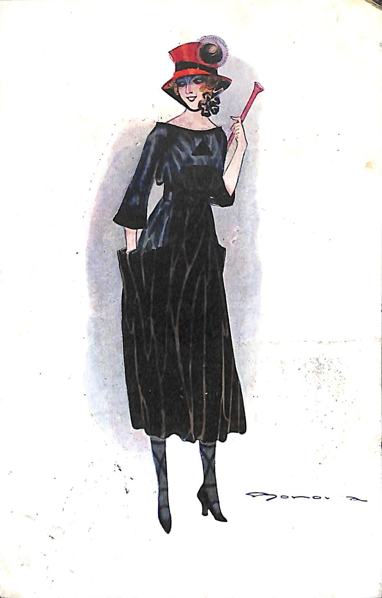
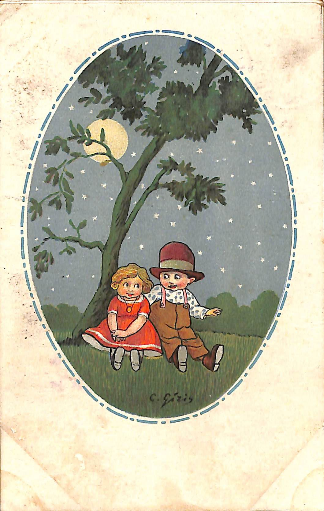
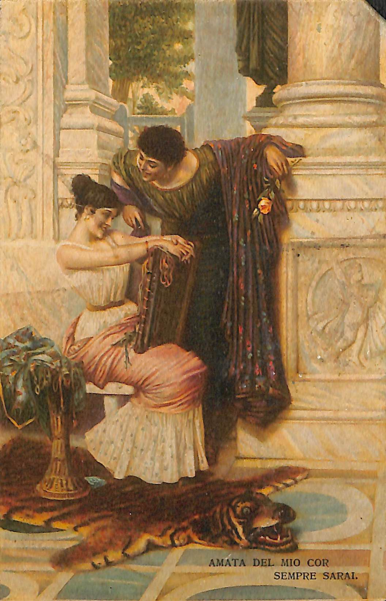

Il progetto:
Il sito è stato realizzato per il progetto del corso di Codifica di Testi a.a.
2021/2022 del corso di laurea in Informatica Umanistica e
consiste nella codifica di tre cartoline riguardanti la corrispondenza amorosa
tra il militare Giovanni e
Oliva
Turtura
.
Le cartoline provengono dal Museo Civico Etnografico "Giovanni Podenzana", sezione dei cimeli garibaldini e della
Prima Guerra Mondiale,
La Spezia (SP),
Italia.
Le cartoline sono state pubblicate dall'Università di Pisa,
nell'anno 2018,
dal Laboratorio di Cultura Digitale - Università di Pisa.
Guida alla lettura delle cartoline:
- i caratteri tra [parentesi quadre] corrispondono a testo aggiunto dai trascrittori.
- la dicitura "(poco chiaro)" rappresenta parole poco definite ma ancora leggibili
e comprensibili.
- il simbolo "[...]" è stato inserito nel caso in cui del testo o una parte di esso
sia stato considerato completamente illeggibile.
Passando con il cursore sopra le immagini delle cartoline, una lente di ingrandimento
permetterà di notare meglio i dettagli e le particolarità.
Identificatore cartolina: 7694_139_001/002
Descrizione: Cartolina Artistica
Caratteristiche: 9x14cm, Carta, Buono
Lingua: Italiano
Mittente: Giovanni (firmato Giovannino)
Destinatario: Oliva Turtura
Provenienza: Modena (MO)
Destinazione: Ravenna (RV)
Data: 1917/22/08
Note: Sul retro riporta stampati "Produzione italiana serie 132-2" e "Uff. Revisione Stampa N. 1263"
Titolo opera: [Donna con bastone]
Descrizione: Donna con cappello rosso tiene in mano un bastone.
Autore dell'opera: Bonora
Messaggio:
Modena
, lì
22/8-17
Affettuosissimi
Giovannino
Indirizzo:
Gent Sig na
Oliva Turtura
Via Girolamo Ros
ſ
i 58
Ravenna
Identificatore cartolina: 7694_159_001/002
Descrizione: Cartolina Artistica
Caratteristiche: 9x14cm, Carta, Buono
Lingua: Italiano
Mittente: Giovanni (firmato Giovannino)
Destinatario: Oliva Turtura
Provenienza: Modena (MO)
Destinazione: Ravenna (RV)
Data: 1917/9/9
Note: Sul retro troviamo la stampa "Proprietà artistica riservata - Uff. Rev. Stampa Milano 25-4-17 N 621"
Titolo opera: [Bambini che si abbracciano]
Descrizione: Due bambini si abbracciano di notte sotto un albero.
Autore dell'opera: C. Giris
Messaggio:
Modena
lì
9/9-17
Un pensiero affettuoso
Giovannino
Indirizzo:
Gent Sig na
Oliva Turtura
Via Girolamo Ros
ſ
i 58
Ravenna
Identificatore cartolina: 7694_109_001/002
Descrizione: Cartolina Artistica
Caratteristiche: 9x14cm, Carta, Buono
Lingua: Italiano
Mittente: Giovanni (firmato Giovannino)
Destinatario: Oliva Turtura
Provenienza: Modena (MO)
Destinazione: Ravenna (RV)
Data: 1917/03/07
Note: In fronte riporta una stampa "Amata del mio cor sempre sarai". Sul retro riporta stampato nome dell'autore (Muzzoli) e il titolo dell' opera in fronte, e " E.Sborgi. Firenze. - Riproduzione interdetta"
Titolo opera: Servilia e Caio Giulio
Descrizione: Servilia, seduta e sorridente, e Caio Giulio in una stanza
Autore dell'opera: Muzioli
Messaggio:
3/7-1917
Temporale
Giovannino
Indirizzo:
Gent Sig na
Oliva Turtura
Via Girolamo Ros
ſ
i 58
Ravenna
Trascrizione a cura di: Elena Raso, Marco Caruso
Codificato da: Elena Raso, Marco Caruso
Compilato da: Tommaso Castagneto
Responsabile scientifico: Giacomo Paolicchi , Enrica Salvatori
Funzionario responsabile: Marzia Ratti
Available under licence only concessa dal Laboratorio di Cultura Digitale - Università di Pisa.